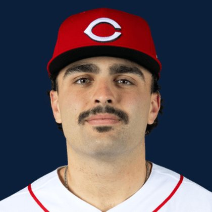

BASE KEEP
The Keep · The Diamond · The Farm
Player File · 3B CIN

Sal Stewart
#27 · 3B · Cincinnati Reds · age 22 · B/T RR · 6' 1" / 224 lbs · MLB debut 2025 · Miami, USA
Keep avg27.48
# Boards23
BK Value6,353
Spread4–116
Hitting
| Year | G | AB | R | H | 2B | HR | RBI | SB | BB | SO | AVG | OBP | SLG | OPS |
|---|---|---|---|---|---|---|---|---|---|---|---|---|---|---|
| 2026 | 127 | 483 | 69 | 125 | 24 | 27 | 94 | 12 | 54 | 120 | .259 | .334 | .476 | .810 |
| 2025 | 18 | 55 | 11 | 14 | 1 | 5 | 8 | 0 | 3 | 15 | .255 | .293 | .545 | .838 |
The Keep#26BK 6,353
The Lineup#20BK 6,917
The Diamond#27BK 6,268
The 2026 line
Keep #26 · avg 27.48 · 23 boards · .259 / 27 HR / 12 SB / .810 OPS
Baseball Savant
Starcast · spray · pitch
Percentile ranks (Starcast) plus the official Savant spray chart for bats and pitch chart for arms. Open the full Baseball Savant page.
Batter · 2026
xwOBA
80
xBA
56
xSLG
84
xISO
87
xOBP
60
Barrels
96
Barrel %
88
EV
68
Max EV
77
Hard Hit %
39
K %
45
BB %
59
Whiff %
32
Chase %
50
Speed
29
Arm
20
OAA
67
Bat Speed
52
Squared Up
36
Swing Len
69
Hits spray chart
Minus
- Board spread 4–116 (112 ranks).
Board graph
Spread 4–116 · 23 sources
Every Board
Spread 4–116 · 23 sources
| Source | Rank |
|---|---|
| Baseball Prospectus | 4 |
| The Dynasty Dugout | 4 |
| Baseball America | 4 |
| MLB Pipeline mix | 4 |
| RotoGraphs Model | 12 |
| Razzball | 19 |
| Enos Slaughter | 19 |
| RotoWire | 20 |
| FanGraphs The Board | 20 |
| The Athletic | 22 |
| CBS Sports | 27 |
| Ottoneu | 27 |
| ESPN | 30 |
| NFBC ADP | 30 |
| Mastersball | 30 |
| Yahoo Fantasy | 30 |
| ATC ROS | 30 |
| Fantasy Baseballers | 32 |
| Pitcher List | 33 |
| Four-Seam Fantasy | 34 |
| Dynasty League Baseball | 35 |
| TDG Points | 50 |
| FantasyPros Dynasty ECR | 116 |
BK News
- Today's Best MLB Home Run Prop Bets: Top 5 Predictions ft. Matt Olson, Pete Crow-Armstrong | August 28, 2026
- JJ Wetherholt lands on IL with wrist injury: Who could benefit in the National League Rookie of the Year race?
- Reds vs Cubs Prop Picks for Sunday Night Baseball
- Cardinals Roster Move Has Huge Impact on Sal Stewart’s Rookie of the Year Chances
All players · The Keep · The Farm · The Diamond · BK News · The Lineup · Pitchers · Calculator